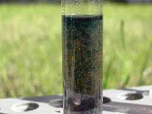

Qualche tempo fa avevo preparato il p-nitrobenzen-azo-1-naftolo, ovvero il Magneson II; oggi è il momento di verificare con delle semplici prove se questa sostanza (non l'avevo mai usata prima!) è proprio degna di questo nome e se sa fare il suo dovere, cioè essere MOLTO sensibile al magnesio.
Il principio di funzionamento di questo metodo si basa sul fatto che in presenza di ioni magnesio in ambiente fortemente alcalino per ioni OH- si viene a formare idrossido di magnesio, il quale, col colorante organico in queste condizioni produce per adsorbimento una lacca intensamente colorata in blù.
Magneson + Mg2+ + 2 OH- --> Mg(OH)2 > lacca blù
Vi sono vari modi di condurre il test, che si differenziano solo in qualche particolare, ma il principio è sempre lo stesso e la procedura non è critica in nessuna fase (tanto meno in un lavoro solo qualitativo/informativo come questo).
Io ho preparato una soluzione di Magneson II circa al 1% in etanolo (ne basta poco, il potere colorante è grandissimo) ottenendo un liquido intensamente colorato in rosso-arancio; per le prove ho poi usato qualche goccia di questa soluzione.
Non bisognerebbe mai aver fretta quando s'hanno da fare delle foto... ma càpita!
Le modeste immagini che seguono mostrano come ho proceduto: in una provetta contenente acqua distillata ho aggiunto dieci gocce della soluzione etanolica, ottenendo una soluzione di color rosa violaceo.
Alcalinizzando questa soluzione il colore passa decisamente a color malva e tale rimane (prova in bianco).
In un'altra provetta, contenente acqua di rubinetto, ho aggiunto due palline di KOH e la medesima quantità di reattivo.

La provetta (a sinistra) assume subito un colore azzurro che si va velocemente intensificando; dopo pochi minuti si vanno formando evidenti fiocchi di un precipitato blù, indice della presenza di ioni magnesio.
Il calcio (e l'alluminio) eventualmente presenti non disturbano se in piccola quantità.

Non ho trovato in bibliografia l'effettiva sensibilità (in ppm di Mg2+) di questa reazione; tuttavia è sensibilissima, potendo rilevare tracce di magnesio.
Per l'acqua della mia zona, che è abbastanza dura e ricca in questo elemento (circa 15-20 mg/l), non c'è alcun problema per il test, che come si vede riesce alla grande.
Quando avrò un po' più di tempo a disposizione proverò la sensibilità effettiva per successive diluizioni di una soluzione campione di MgCl2.
Ora, con i miei 5 g di Magneson II della sintesi precedente, sono attrezzato per almeno 103 test sul magnesio.
Ovvero, secondo le necessità del mio lab, questa quantità sarebbe sufficiente per tutta l'eternità...